熱門店家
| 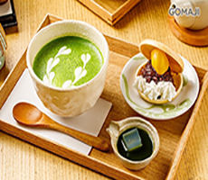 | 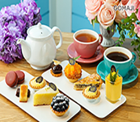 | 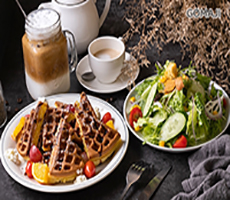 |
| 【伊藤久右衛門‧茶房】 | 【88號樂章-88 La Plaza】 | 【BB’S】 |
| 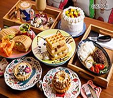 | 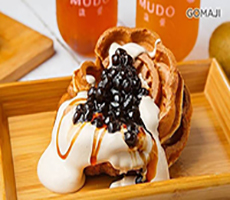 | 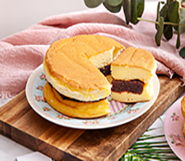 |
| 【貓小路cafe – 2號店】 | 【沐朵MUDO 創意時尚輕食茶飲店】 | 【Eliftun茶品沙龍】 |
西式料理
【草莓大福】
| 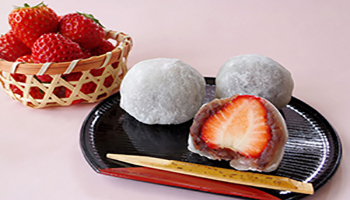 | 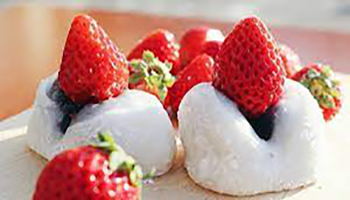 |
草莓大福能吃到北海道紅豆作成的甜餡，以及栃木縣酸甜的「栃乙女」草莓所形成的完美和諧，僅限在銀座總店販售，由於草莓大福十分搶手，有時會銷售一空，因此若看見它的身影，建議大家立刻出手購買。
【鳳梨酥】
| 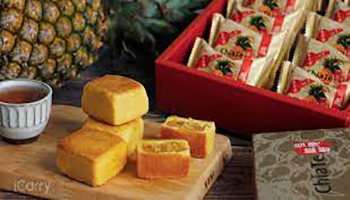 | 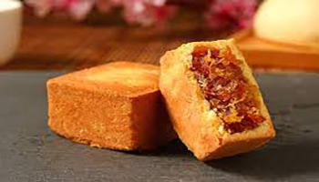 |
因應時代變化，除了香甜酥軟的傳統鳳梨酥之外，店裡還有提供現在很夯的土鳳梨酥，能吃到一條一條的土鳳梨內餡，微酸的口感帶出了土鳳梨的香氣，而包裹著鳳梨內餡的餅皮也非常紮實，不時地散發奶油香，像這樣的點心，最適合和朋友一邊喝茶一邊享用了。
【桂圓蛋糕】
| 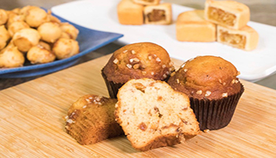 | 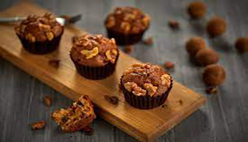 |
100%純手工製作，使用桂圓（龍眼乾）、杏仁角、安佳無水奶油、鹽、黑糖、低筋麵粉、牛奶、雞蛋與蜂蜜製作的桂圓蛋糕，經過店家特別減糖處理，吃起來並不會很甜，口感鬆軟綿密、香濃誘人，淡淡的桂圓香在嘴裡飄逸著，是一個深受婦女們喜愛的點心